来源：https://sxdb3vfjo5y.feishu.cn/docx/P46pdiW6xokCS9xusWDcQNUgn8c
选择这个题目，是因为我自己在知识付费和在线成人教育行业做了很多年，同时也在前公司做过一段时间的小红书渠道的运营负责人，负责流量和转化，最高时做到过小红书日引流500+到私域，单月引流1万+，变现30万+。相对比较熟悉这个平台，所以希望在比较短的时间内能够产出一些对大家有用的东西。
这篇文章不是只单独拆解某一个或几个账号，而是根据一些典型的账号，结合我自身的一些经验，对小红书的赚钱/副业/创业粉这个赛道，进行一个总体的分析，帮自己也帮大家对这个赛道有一个相对全面的了解。
太多了，但总体上可以分为两大类，
一类是教认知的，比如赚钱逻辑，赚钱经验等等，主要是“道”和“术”的层面；
另一类是教执行的，比如具体项目玩法，细分赛道方法论干货等等，主要是“法”和“器”的层面。
当然也有两者都有的，比如咱们生财里面，这些内容就都包含。
这里我在两大类中的多个赛道中随机选取（刷到）了8个账户案例来进行对比拆解，粉丝数从少到多都有，但大部分找了适合新手去对标的类型。
| 账号 | 选题类型 | 粉丝数 | 账号运营目的 | 变现方式 |
|---|---|---|---|---|
| 奶油泡芙收藏家 | 女性赚钱成长鸡汤文 | 1481 | 接广告 | 广告费 |
| 阿柠的创业笔记 | 赚钱项目拆解 | 3102 | 引流 | 私域卖虚拟项目资料 |
| 桂花雪梨糖. | 个人IP赚钱经验图文 | 21.2万 | 涨粉 | 接广告 |
| 自媒体监督侠南希 | 账号诊断，直播账号运营教学 | 2518 | 引流私域 | 卖课程和陪跑服务 |
| 水月冰云 | 聚光硬广笔记素材 | 28 | 付费广告投放引流 | 拼多多虚拟店铺项目教学 |
| 慕易老师写作培训 | 教你写小说当副业赚钱攻略 | 809 | 广告引流 | 知乎知学堂写作体验营转大课 |
| joey乔TK说 | tiktok运营带货教程 | 3311 | 资料钩子评论引流 | 卖TK带货课程和陪跑营 |
| 小达探索ai | AI副业变现 | 1278 | 群聊引流 | AI动画视频教学 |
1）图文
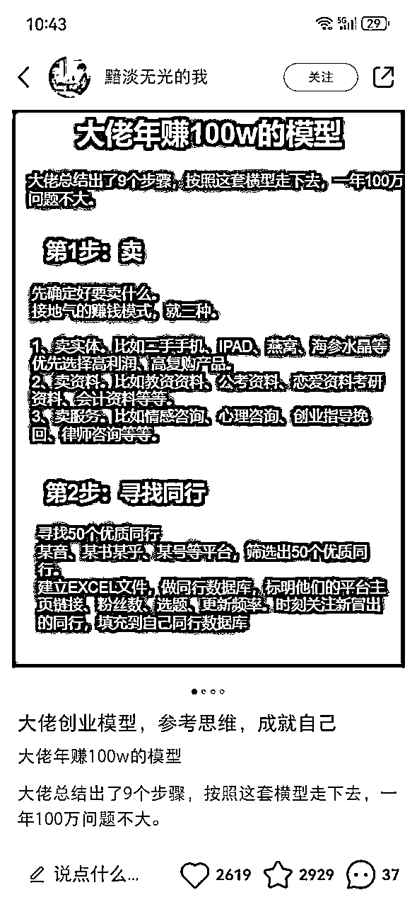
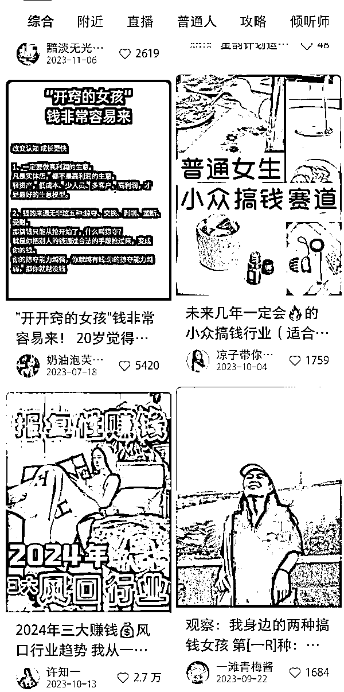
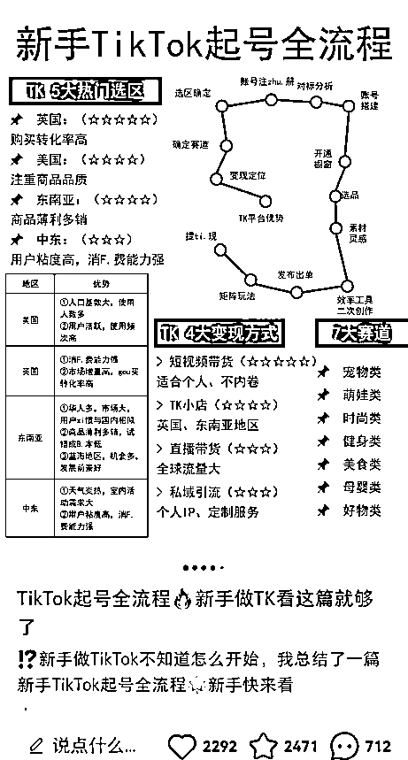
小红书上还是图文内容更多，通过图文类的赚钱干货、鸡汤文、项目拆解等笔记，低成本制作，坚持更新获取流量。
类型大致有三种：
1、纯文字转图片，图1这种。这种制作起来最简单，找个背景模板，然后把文字贴上，设计一下标题和排版即可。适合纯小白起步尝试。
还有一些变种，类似图3这种带点设计的，表格，导图，画圈小标志什么的，图片更精美，更吸睛，爆款率会比纯文字备忘录形式要高一些。适合会一些PS或图片设计技能的人。
2、网图拼合二创，类似图2右上角这种。运用一些案例截图和网络图片，制作小红书风格的图文笔记内容，不用实拍，但需要找素材。适合不会拍照、拍不好看的人。
3、个人IP人设类，类似图2左下角这个视频的封面。原创图片拍摄+干货经验，需要自己实拍素材制作，但人设感和粉丝信任度会更好一些。
图文是最适合小白上手，普通人都能做的方式，制作成本较低，就意味着容易坚持，不需要花费太多时间。
我觉得有时候做一个账号或者项目，能坚持做下去是最重要的，比每篇准备好长时间，但更新频率极低，效果要好得多。
发多了，持续优化，学习爆款，自然也能做出爆款来，获得更多流量。
2）视频
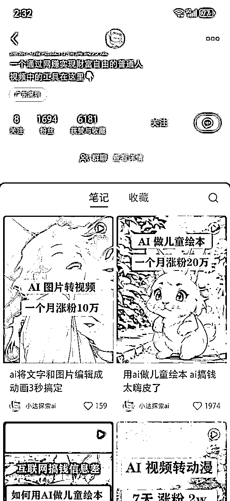
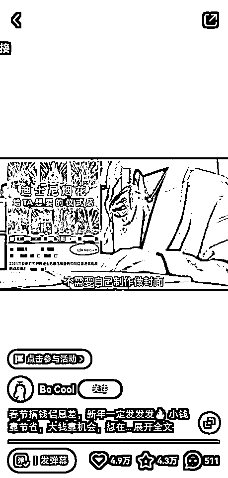
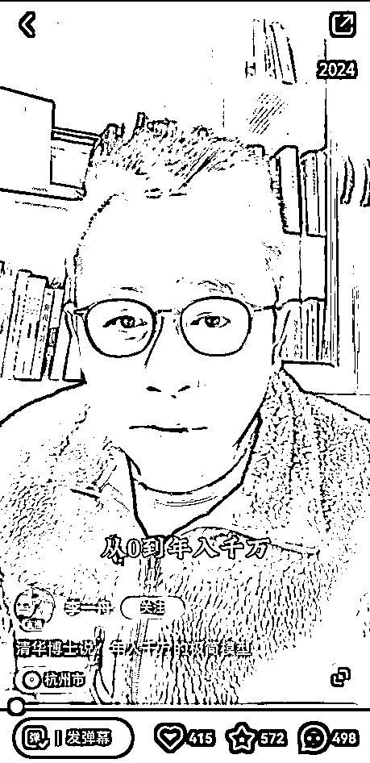
视频也有三种类型，跟图文的三种类型分类逻辑差不多。但视频的展现方式比图文更加直观生动，交互性好，更好地吸引用户的注意力。
第一种是图片转视频，不用出镜，无需拍摄，学会剪辑以及一些视频处理技术就可以，现在AI也可以做得出来。一些项目拆解类或操作教程类的视频也可以用这种形式。
第二种是一些实拍素材背景+配音，这种可以不露脸，但需要会拍摄剪辑，可以只拍一些环境和动作的vlog，然后配音讲解。
第三种是出镜口播，适合有一定镜头表现力的人，拍剪倒是不难。出镜类的人设感会更强，用户信任度更高，变现也会更好一些。
2）直播
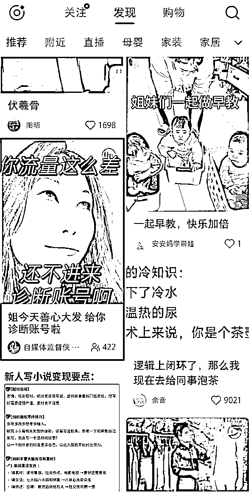
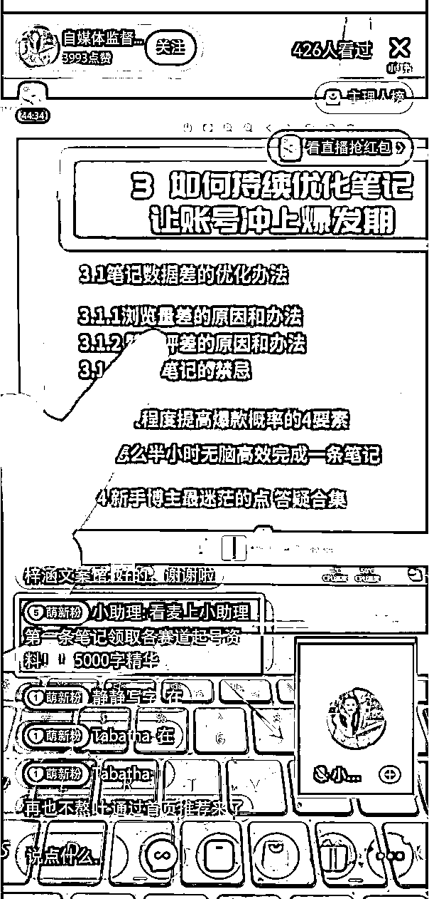
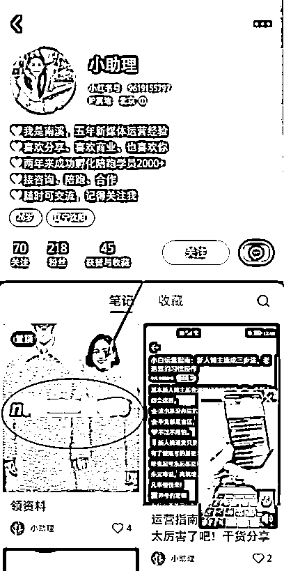
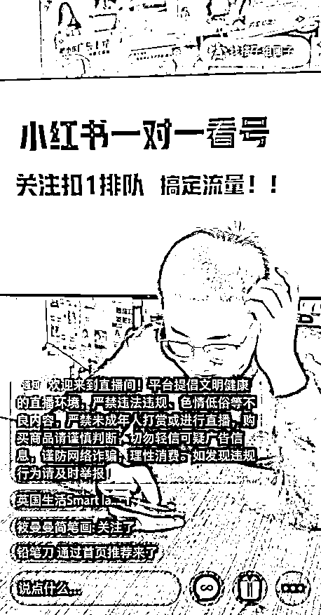
直播引流，大概两种形式，
一种不出镜，对着电脑或屏幕播；一种出镜直播，人坐在屏幕前讲。
都是讲解赚钱干货，或者看号，指导，答疑等形式。然后通过店铺挂低价课，或者连麦小助理的形式来引流。
直播的时间成本较高，所以一般都是IP人设类的账号，并且配合一些后端课程和服务产品的，才会开直播，否则效率太低。
3）付费投流情况
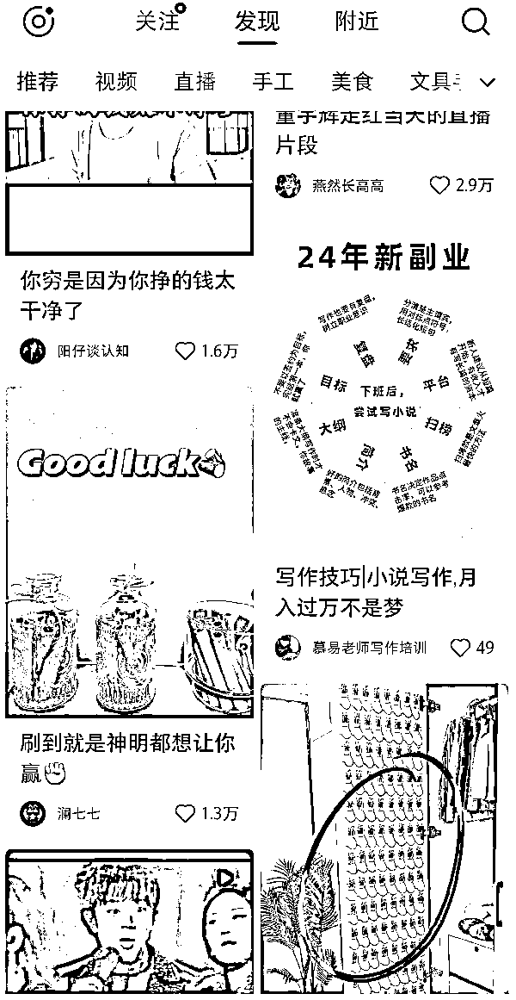
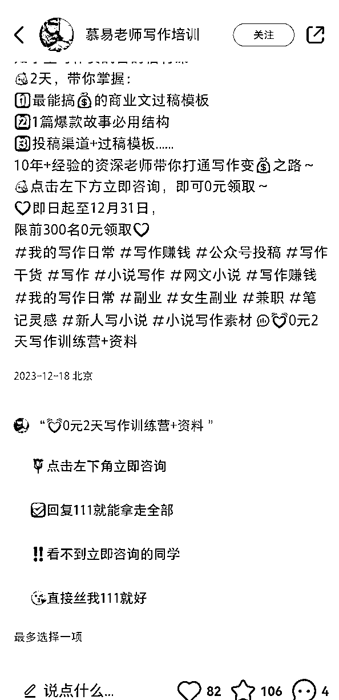
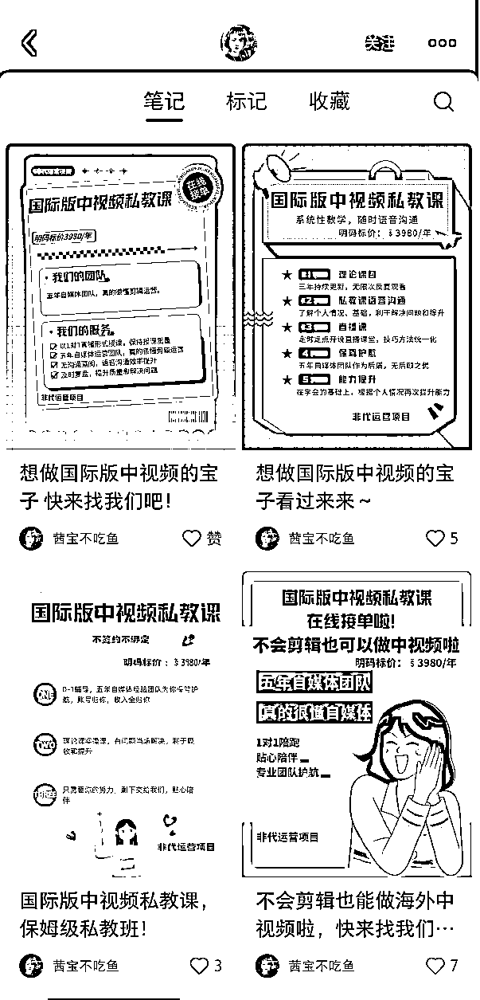
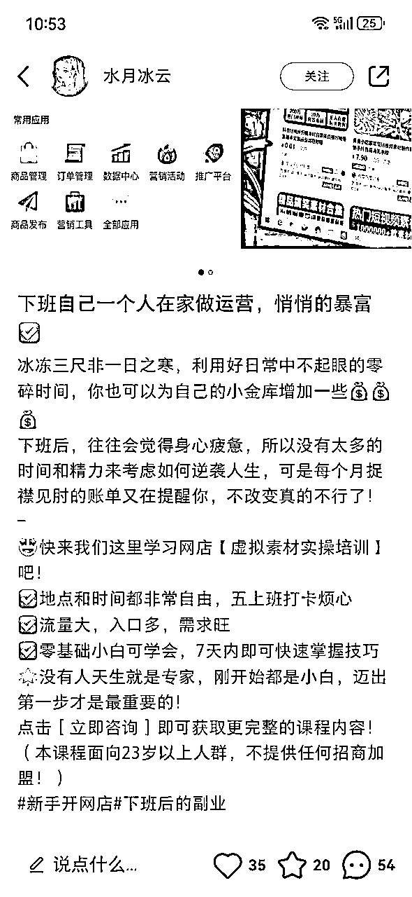
以上都是免费流量，虽然只有内容制作的时间成本，但是流量不稳定，有爆款流量就好，没爆款就不太好。
且引流有风险。
现在小红书一直在推商业化，推企业号，做聚光投放，近半年的免费流量的确不好做了，所以很多赚钱博主也都开始做付费投流。
付费投流一般都是硬广，直接说是做什么项目培训的，吸引精准用户点击私信加微。投流之后的引流权限就比较高了，默认可以发微信，不用太偷偷摸摸的了。
配合后端成熟的变现模式，现在小红书的投流流量单价还不算贵，比其他平台要便宜。
我自己这边也负责过项目的聚光投放，投硬广和投爆款的方式都测试过。
硬广的方式适合后端变现转化比较成熟的项目，因为用户精准度高，客资线索就比较贵，如果后端转化率和产品客单跟不上，ROI太差，是无法盈利的。
另一种方式是投爆款，自然流量爆款的老笔记，用聚光再投放激活，继续用私信或评论区钩子引流。这种投放方式引来的流量会相对更泛一些，因为爆款一般都是切中泛流量大众化的内容才能爆。但是胜在便宜，我自己测过的可以做到单个私信咨询5元左右，单个好友15元左右，再通过私域内的流量筛选环节，即使转化率不算高的项目，ROI也可以做到1:3。
4）结论
内容方式与变现效率有关，赚钱少的只用图文这种低成本生产方式，后端有完善的高客单变现产品的，会利用成本较高的直播方式，或者直接付费投流。
图文类只能做接广告或者低客单，高客单大多都是人设类的视频或直播，倾向于打造信任度，再转化，或者付费投流后先参加体验课或低价引流课程，再进行低转高。
图文和视频我们都做过，总体来看，在方向和定位都没问题的情况下，制作成本越高，引来的用户变现价值越高。
也就是视频流量的转化率＞图文流量的转化率。
所以，可以参考这些赚钱博主，结合自己的情况，找到自己能做并且利益最大化的流量运营方式。
教人赚钱的博主，没有能够匹配的实物产品来变现，因为没有一个实物产品买了是可以直接帮助赚钱的，所以没法带货。
因此产品变现一般有2种：一种是涨粉类博主，有一定流量和粉丝以后，可以基于自己的粉丝画像去接广告，比如教女性赚钱的博主，可以带一些女性常用的产品广告。但这种一般报价不算太高，像上面那个20万粉的账号博主，一个月的广告收入也才1万多。
另一种就是引流类博主，从第一个粉丝就可以开始变现，会比接广类的账号天花板更高一些。
那既然要引流到私域变现，就需要有自己的产品。要么自己生产，要么分销别人的。
一般产品就是3个类型的，资料，课程，服务。
1）卖赚钱项目资料
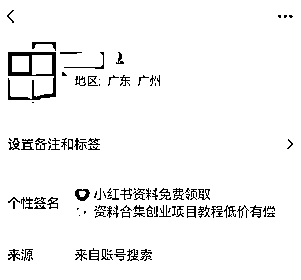
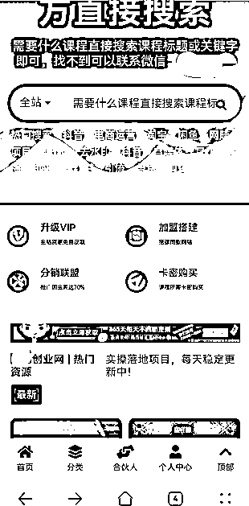
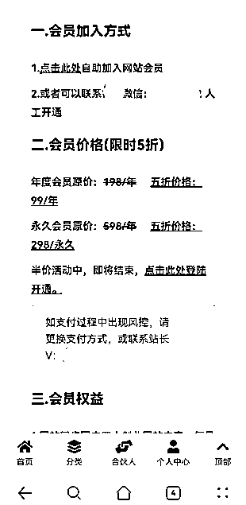
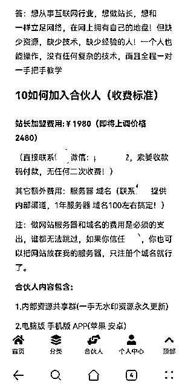
这种应该是早期网赚玩法，售卖项目资料网站会员，有年度会员，永久会员等低客单，还有分销加盟等高客单。
需要自己建站，搜集内容，懂技术的小伙伴应该都懂。
但我个人觉得这种产品不太靠谱，真正做项目的人，不可能在每个板块都有那么多实操经验，所以搬运盗版外部课程肯定是免不了的。交付什么的更不用太指望了，只能说是卖铲子，能不能挖到金子那就不管了。
2）卖课程
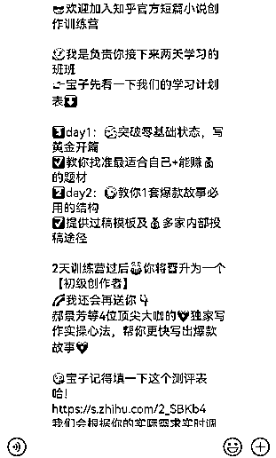
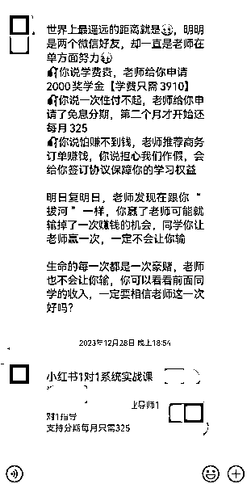
课程是需要自己研发生产交付的，所以一般有自己独立课程的都相对做得比较大一点了，这里面还有新职高途和知乎知学堂的课程。
课程单价从99-5999都有，主要根据不同的转化和交付体系来。
一般个体IP的话，都是靠朋友圈和公众号的运营，来持续触达用户，实现转化，客单价相对较低一些。因为人力有限，很难每个人都深入的去沟通。相应的，转化动作会更佛系一些，转化周期也会比较长，可能平均新粉的转化周期会在10天~1个月左右。
而如果是公司运作的话，转化环节的动作就会多一些，比如有体验营，有1v1助教老师的私聊销售等，因为规模化运营是有人去做这些事情的。每个转化节点设计好，就能够缩短转化周期，产品的交付和服务也有专人去做，客单价也可以卖得更高一些。
像我了解到之前生财是没有体验营的，而最近有了体验营，这就是规模化运作，能够提高并稳定转化率。
2）卖服务（陪跑、咨询、圈子等）
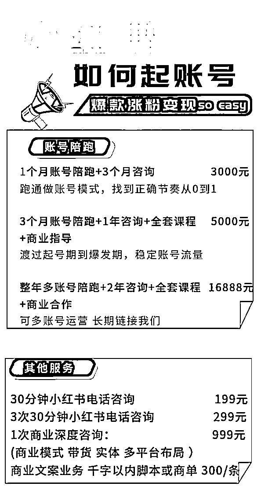
打造出一门完整的课程并能够持续迭代优化，是比较耗费精力和成本的，如果课程无法起到很好的交付效果，或者暂时无法打磨出自己的课程，那么可以先做一些服务。
像按时间按次的咨询，按周期的项目陪跑，以及一些匹配的项目交流圈子。都有在做的。
为了“教会”用户赚钱，这些博主也都用上了市面上各类能见到的服务形式，每种类型可能适合不同的人群，吸引不同的人群付费。
1）收益分析
赚钱博主接广告的收益是很少的，前面也说了，20万粉的成长赚钱博主平均1个月的广告收益也才1万左右。
真正赚钱的还是引流到私域做课程服务变现的这种。
具体变现收益，要根据引流效率和转化效率来评估，这个数据比较私密，不太好准确计算，但据生财里各类圈友的帖子中来看。
个人小博主卖卖资料，可能每月能赚个几千几万；
大博主做知识付费或高客单圈子和服务，每月能赚几万~几十万不等；
公司级别的话，每月应该有二三十万~几百万，看规模。
（我这里可以给大家提供个参考数据，小红书副业类图文笔记泛流量粉丝的引流率大概在0.2%左右（引流加粉数/账号总阅读），也就是1万阅读大概能加20个微信。然后单粉ARPU值大概在30-40左右。这样大概就能通过账号阅读数来评估出总收益了。）
2）成本分析
知识付费类的成本相对较低，主要是人员成本。如果是个体IP的话，成本就是自己的时间成本。
如果是团队或公司的话，就是大家的工资成本，引流人员、销售运营人员、后端交付讲师等，不同的运作模式可能都不一样。
3）综合利润
总体下来看，教人赚钱然后做知识付费赛道的毛利率还是比较高的，如果是团队运作的话，去掉各类人工成本和投流成本，净利率应该也能在30%左右。
从0-1，可以先从流量做起，能搞到流量，才有可能赚到钱。
流量从低成本内容到高成本高信任内容，从图文到视频到直播，前面那些形式我们都说到了。
新手可以先从最简单的开始做，然后逐步进阶，简单的方式最好不要一直做，还是尽量要多去尝试一些不可替代性更强的人设IP类内容，逐渐转型，这样才能够长期具备竞争力。
在没有产品的时候，可以先分销别人的产品，或者找到靠谱的后端产品合作。比如赚钱博主分销生财门票就是个不错的选择。
但如果要放大的话，肯定要尽量自己去搭建产品。
一个业务链条，你能囊括的环节越多，就越能赚钱。
所以从流量到转化到产品，有能力的都可以自己做一做，这是一方面放大的思路。
另一方面，就是把赚到的钱去投流，吸引来更多的流量去放大，不要一直局限于免费流量，能投广告的生意才算能做大的生意。
自古以来，财就是很多人最大的欲望之一，所以教人赚钱肯定是市场很大的，因此也会产生各类与此相关的骗术和套路。
所以不管选哪类细分赛道，项目肯定能赚钱，但想要长期的赚钱，持久地赚钱。我觉得我们还是要思考自己到底能帮别人提供哪些价值。能为别人避坑，少走弯路，帮小白提升能力，真诚做交付，这钱赚得就没问题。
这么多赚钱博主，有只是为了赚钱割韭菜的，也有认真做交付，像生财一样真的想帮大家赚到钱的。
但能走到最后的，一定是后者。
价值观是什么？是知道一切真相和套路后，依然选择坚守的东西。
希望我们阅尽千帆，归来仍是少年。